January 30, 2022: intro to shap explanations
Contents
January 30, 2022: intro to shap explanations¶
import numpy as np
import pandas as pd
import shap
import sklearn
import matplotlib.pyplot as plt
linear model¶
X, y = shap.datasets.boston()
X100 = shap.utils.sample(X, 100)
# linear model
model = sklearn.linear_model.LinearRegression()
model.fit(X, y)
Function load_boston is deprecated; `load_boston` is deprecated in 1.0 and will be removed in 1.2.
The Boston housing prices dataset has an ethical problem. You can refer to
the documentation of this function for further details.
The scikit-learn maintainers therefore strongly discourage the use of this
dataset unless the purpose of the code is to study and educate about
ethical issues in data science and machine learning.
In this special case, you can fetch the dataset from the original
source::
import pandas as pd
import numpy as np
data_url = "http://lib.stat.cmu.edu/datasets/boston"
raw_df = pd.read_csv(data_url, sep="\s+", skiprows=22, header=None)
data = np.hstack([raw_df.values[::2, :], raw_df.values[1::2, :2]])
target = raw_df.values[1::2, 2]
Alternative datasets include the California housing dataset (i.e.
:func:`~sklearn.datasets.fetch_california_housing`) and the Ames housing
dataset. You can load the datasets as follows::
from sklearn.datasets import fetch_california_housing
housing = fetch_california_housing()
for the California housing dataset and::
from sklearn.datasets import fetch_openml
housing = fetch_openml(name="house_prices", as_frame=True)
for the Ames housing dataset.
LinearRegression()
model.get_params()
{'copy_X': True,
'fit_intercept': True,
'n_jobs': None,
'normalize': 'deprecated',
'positive': False}
for i in range(X.shape[1]):
print(X.columns[i], '=', model.coef_[i].round(4))
CRIM = -0.108
ZN = 0.0464
INDUS = 0.0206
CHAS = 2.6867
NOX = -17.7666
RM = 3.8099
AGE = 0.0007
DIS = -1.4756
RAD = 0.306
TAX = -0.0123
PTRATIO = -0.9527
B = 0.0093
LSTAT = -0.5248
X100
| CRIM | ZN | INDUS | CHAS | NOX | RM | AGE | DIS | RAD | TAX | PTRATIO | B | LSTAT | |
|---|---|---|---|---|---|---|---|---|---|---|---|---|---|
| 172 | 0.13914 | 0.0 | 4.05 | 0.0 | 0.510 | 5.572 | 88.5 | 2.5961 | 5.0 | 296.0 | 16.6 | 396.90 | 14.69 |
| 47 | 0.22927 | 0.0 | 6.91 | 0.0 | 0.448 | 6.030 | 85.5 | 5.6894 | 3.0 | 233.0 | 17.9 | 392.74 | 18.80 |
| 117 | 0.15098 | 0.0 | 10.01 | 0.0 | 0.547 | 6.021 | 82.6 | 2.7474 | 6.0 | 432.0 | 17.8 | 394.51 | 10.30 |
| 192 | 0.08664 | 45.0 | 3.44 | 0.0 | 0.437 | 7.178 | 26.3 | 6.4798 | 5.0 | 398.0 | 15.2 | 390.49 | 2.87 |
| 323 | 0.28392 | 0.0 | 7.38 | 0.0 | 0.493 | 5.708 | 74.3 | 4.7211 | 5.0 | 287.0 | 19.6 | 391.13 | 11.74 |
| ... | ... | ... | ... | ... | ... | ... | ... | ... | ... | ... | ... | ... | ... |
| 99 | 0.06860 | 0.0 | 2.89 | 0.0 | 0.445 | 7.416 | 62.5 | 3.4952 | 2.0 | 276.0 | 18.0 | 396.90 | 6.19 |
| 53 | 0.04981 | 21.0 | 5.64 | 0.0 | 0.439 | 5.998 | 21.4 | 6.8147 | 4.0 | 243.0 | 16.8 | 396.90 | 8.43 |
| 396 | 5.87205 | 0.0 | 18.10 | 0.0 | 0.693 | 6.405 | 96.0 | 1.6768 | 24.0 | 666.0 | 20.2 | 396.90 | 19.37 |
| 121 | 0.07165 | 0.0 | 25.65 | 0.0 | 0.581 | 6.004 | 84.1 | 2.1974 | 2.0 | 188.0 | 19.1 | 377.67 | 14.27 |
| 426 | 12.24720 | 0.0 | 18.10 | 0.0 | 0.584 | 5.837 | 59.7 | 1.9976 | 24.0 | 666.0 | 20.2 | 24.65 | 15.69 |
100 rows × 13 columns
shap.plots.partial_dependence(6, model.predict, X100, ice=False,
model_expected_value=True, feature_expected_value=True)
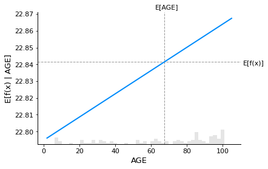
explainer = shap.Explainer(model.predict, X100)
shap_values = explainer(X)
Permutation explainer: 507it [00:16, 13.56it/s]
sample_inds = [23]
shap.plots.partial_dependence(5, model.predict, X100,
model_expected_value=True, feature_expected_value=True,
ice=False,
shap_values=shap_values[sample_inds, :])
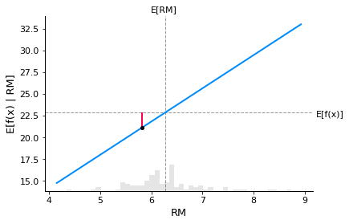
shap.plots.scatter(shap_values[:, 5])
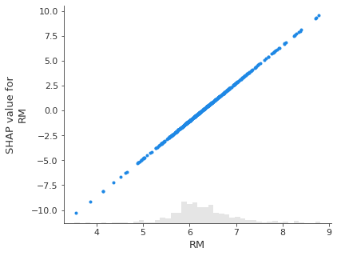
print(model.predict(X)[sample_inds])
print(shap_values.base_values[sample_inds])
[13.80628535]
[22.84139551]
s = shap_values[sample_inds]
s.base_values = s.base_values[0]
s.values = s.values[0]
s.data = s.data[0]
shap.waterfall_plot(s, max_display=14)
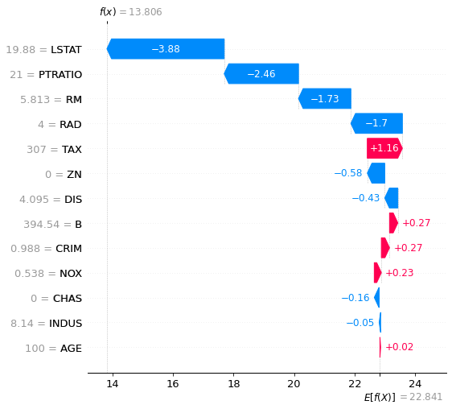
shap_values[sample_inds]
.values =
array([[ 0.27053347, -0.57816681, -0.04899326, -0.16120403, 0.2343416 ,
-1.73280289, 0.02262398, -0.4324488 , -1.7046956 , 1.16117867,
-2.45904061, 0.27436223, -3.88079811]])
.base_values =
array([22.84139551])
.data =
array([[ 0.98843, 0. , 8.14 , 0. , 0.538 , 5.813 ,
100. , 4.0952 , 4. , 307. , 21. , 394.54 ,
19.88 ]])
generalized additive regression model¶
# fit a GAM model to the data
import interpret.glassbox
model_ebm = interpret.glassbox.ExplainableBoostingRegressor()
model_ebm.fit(X, y)
# explain the GAM model with SHAP
explainer_ebm = shap.Explainer(model_ebm.predict, X100)
shap_values_ebm = explainer_ebm(X)
Permutation explainer: 507it [00:36, 10.13it/s]
# make a standard partial dependence plot with a single SHAP value overlaid
shap.partial_dependence_plot(5, model_ebm.predict, X,
model_expected_value=True,
feature_expected_value=True,
ice=False,
shap_values=shap_values_ebm[sample_inds, :])
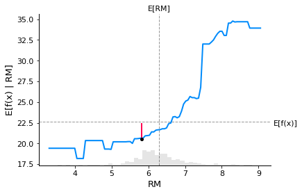
shap.plots.scatter(shap_values_ebm[:, 5], color=shap_values_ebm)
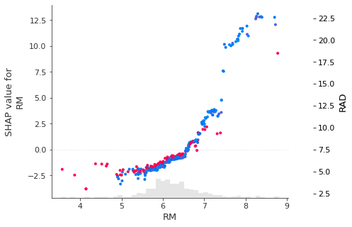
s = shap_values_ebm[sample_inds]
s.base_values = s.base_values[0]
s.values = s.values[0]
s.data = s.data[0]
shap.waterfall_plot(s, max_display=14)
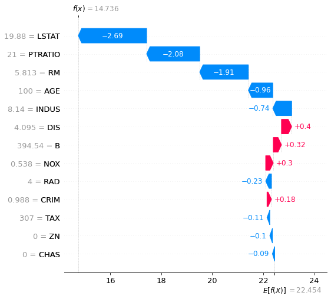
# ============================
# DID NOT UNDERSTAND THIS PLOT
# ============================
shap.plots.beeswarm(shap_values_ebm, max_display=14)
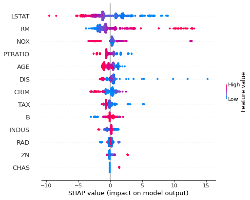
non-additive boosted tree model¶
# train XGBoost model
import xgboost
model_xgb = xgboost.XGBRegressor(n_estimators=100, max_depth=2).fit(X, y)
# explain the GAM model with SHAP
explainer_xgb = shap.Explainer(model_xgb, X100)
shap_values_xgb = explainer_xgb(X)
pandas.Int64Index is deprecated and will be removed from pandas in a future version. Use pandas.Index with the appropriate dtype instead.
pandas.Int64Index is deprecated and will be removed from pandas in a future version. Use pandas.Index with the appropriate dtype instead.
# make a standard partial dependence plot with a single SHAP value overlaid
fig,ax = shap.partial_dependence_plot(
"RM", model_xgb.predict, X, model_expected_value=True,
feature_expected_value=True, show=False, ice=False,
shap_values=shap_values_ebm[sample_inds,:]
)
pandas.Int64Index is deprecated and will be removed from pandas in a future version. Use pandas.Index with the appropriate dtype instead.
pandas.Int64Index is deprecated and will be removed from pandas in a future version. Use pandas.Index with the appropriate dtype instead.
shap.plots.scatter(shap_values_xgb[:, 5], color=shap_values_xgb)
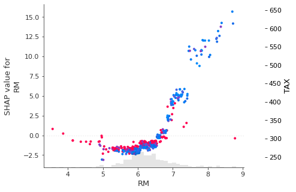
linear logistic regression model¶
# a classic adult census dataset price dataset
X_adult,y_adult = shap.datasets.adult()
# a simple linear logistic model
model_adult = sklearn.linear_model.LogisticRegression(max_iter=10000)
model_adult.fit(X_adult, y_adult)
LogisticRegression(max_iter=10000)
def model_adult_proba(x):
return model_adult.predict_proba(x)[:,1]
def model_adult_log_odds(x):
p = model_adult.predict_log_proba(x)
return p[:,1] - p[:,0]
X_adult
| Age | Workclass | Education-Num | Marital Status | Occupation | Relationship | Race | Sex | Capital Gain | Capital Loss | Hours per week | Country | |
|---|---|---|---|---|---|---|---|---|---|---|---|---|
| 0 | 39.0 | 7 | 13.0 | 4 | 1 | 0 | 4 | 1 | 2174.0 | 0.0 | 40.0 | 39 |
| 1 | 50.0 | 6 | 13.0 | 2 | 4 | 4 | 4 | 1 | 0.0 | 0.0 | 13.0 | 39 |
| 2 | 38.0 | 4 | 9.0 | 0 | 6 | 0 | 4 | 1 | 0.0 | 0.0 | 40.0 | 39 |
| 3 | 53.0 | 4 | 7.0 | 2 | 6 | 4 | 2 | 1 | 0.0 | 0.0 | 40.0 | 39 |
| 4 | 28.0 | 4 | 13.0 | 2 | 10 | 5 | 2 | 0 | 0.0 | 0.0 | 40.0 | 5 |
| ... | ... | ... | ... | ... | ... | ... | ... | ... | ... | ... | ... | ... |
| 32556 | 27.0 | 4 | 12.0 | 2 | 13 | 5 | 4 | 0 | 0.0 | 0.0 | 38.0 | 39 |
| 32557 | 40.0 | 4 | 9.0 | 2 | 7 | 4 | 4 | 1 | 0.0 | 0.0 | 40.0 | 39 |
| 32558 | 58.0 | 4 | 9.0 | 6 | 1 | 1 | 4 | 0 | 0.0 | 0.0 | 40.0 | 39 |
| 32559 | 22.0 | 4 | 9.0 | 4 | 1 | 3 | 4 | 1 | 0.0 | 0.0 | 20.0 | 39 |
| 32560 | 52.0 | 5 | 9.0 | 2 | 4 | 5 | 4 | 0 | 15024.0 | 0.0 | 40.0 | 39 |
32561 rows × 12 columns
y_adult
array([False, False, False, ..., False, False, True])
shap.partial_dependence_plot(8, model_adult_proba, X_adult,
model_expected_value=True,
feature_expected_value=True, ice=False)
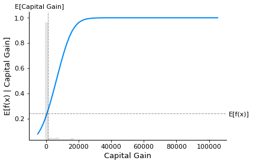
background_adult = shap.utils.sample(X_adult, 100)
background_adult
explainer = shap.Explainer(model_adult_proba, background_adult)
shap_values_adult = explainer(X_adult[:1000])
Permutation explainer: 1001it [00:43, 17.49it/s]
background_adult = shap.maskers.Independent(X_adult, max_samples=100)
background_adult
explainer = shap.Explainer(model_adult_proba, background_adult)
shap_values_adult = explainer(X_adult[:1000])
Permutation explainer: 1001it [00:34, 20.79it/s]
shap.plots.bar(shap_values_adult.abs.max(0), max_display=15)
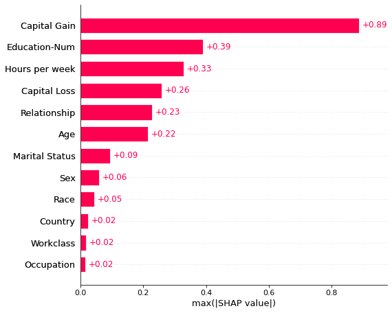
shap_values.max(0)
.values =
array([0.3766125 , 4.06387903, 0.35395581, 2.52552979, 2.95263312,
9.57106718, 0.02262398, 3.94349224, 4.41629398, 2.64132994,
5.54403614, 0.2963378 , 5.64356645])
.base_values =
22.841395505733946
.data =
array([ 88.9762, 100. , 27.74 , 1. , 0.871 , 8.78 ,
100. , 12.1265, 24. , 711. , 22. , 396.9 ,
37.97 ])